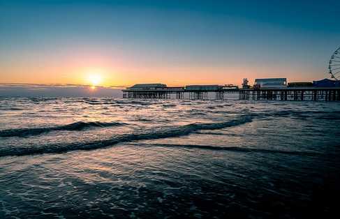
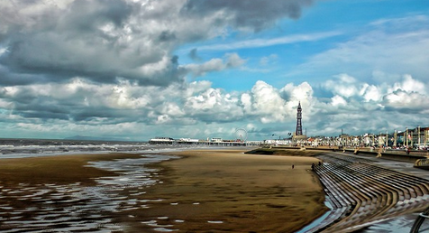
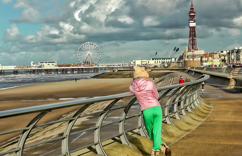
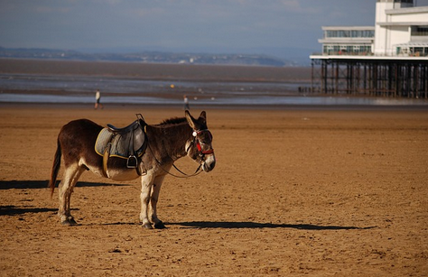
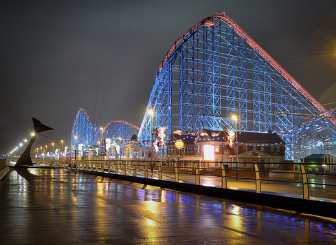
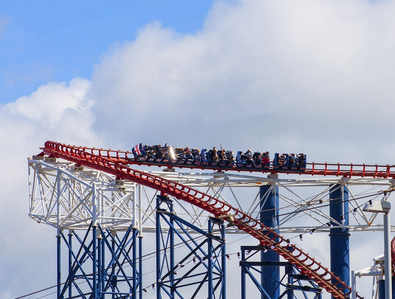
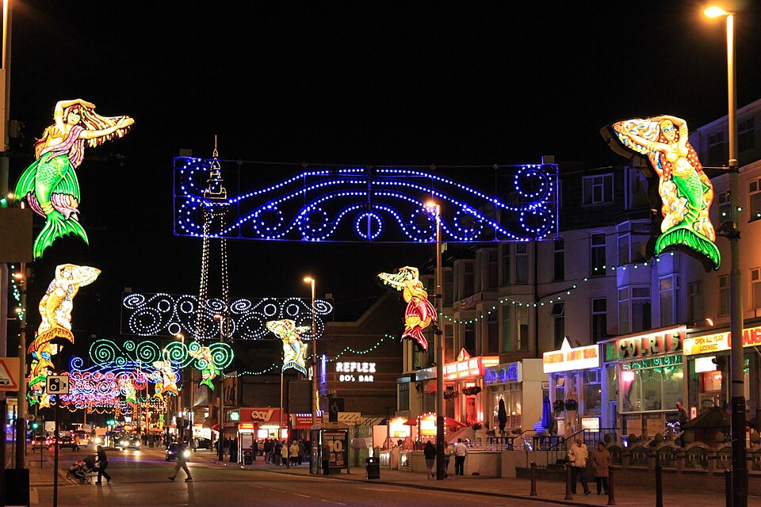
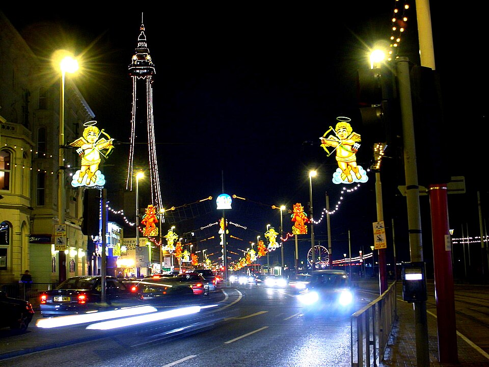
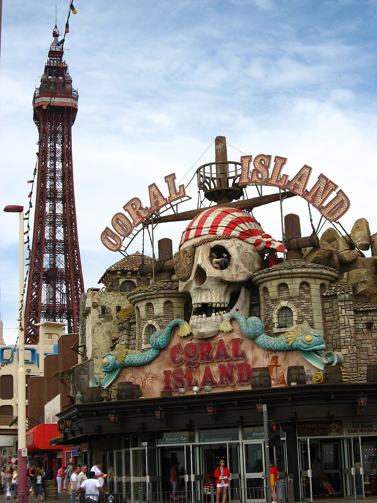

Blackpool is famous for its long sandy beach, the Blackpool Illuminations and fun attractions. The beach stretches for miles along the coast and is a great place to relax, build sandcastles, and enjoy the sea. There is plenty of space for families to sit, play games, and have a picnic.
Next to the beach is the promenade, where people can walk, buy food, and enjoy ice cream. The Golden Mile is a busy part of the promenade with shops, arcades, and entertainment.
Blackpool Pleasure Beach is also located by the seafront. It is a large amusement park with lots of rides and attractions. Visitors can go on roller coasters, water rides, and games. It is popular with families and people who like exciting rides.
Together, the beach and amusement park make Blackpool a fun and exciting place to visit.
Gallery of Blackpool Pleasure Beach








